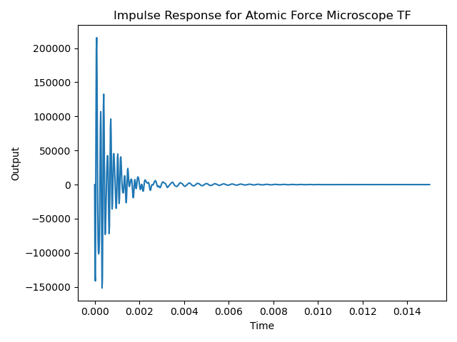
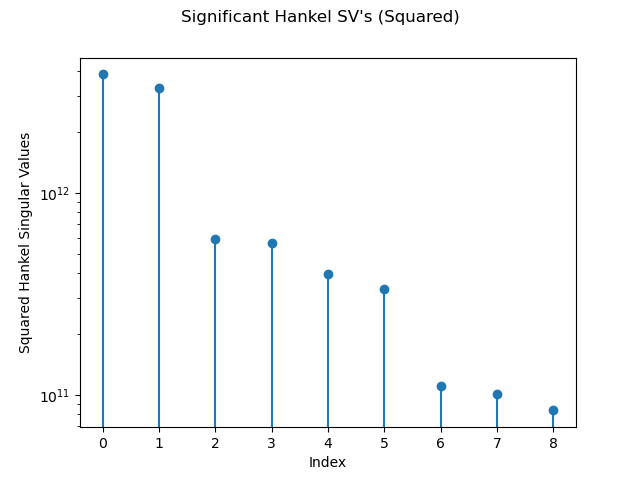
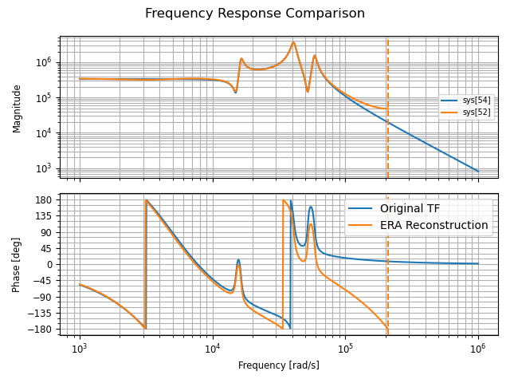

4 System Identification Techniques
4.1 Overview: Eigensystem Realization Algorithm
The Eigensystem Realization Algorithm (ERA) is a method used in system identification to derive a state-space model from time-domain data, typically impulse or step response data.
A Hankel matrix is a structured matrix where each ascending diagonal from left to right is constant.
Two Hankel matrices are constructed from the collected data. Let \(\textbf{y}\) be the sequence of observed data points. Then the Hankel matrix \(\textbf{H}_0\) and the shifted Hankel matrix \(\textbf{H}_1\) are defined as:
\[ \textbf{H}_0 = \begin{bmatrix} y_1 & y_2 & \cdots & y_m \\ y_2 & y_3 & \cdots & y_{m+1} \\ \vdots & \vdots & \ddots & \vdots \\ y_n & y_{n+1} & \cdots & y_{n+m-1} \end{bmatrix} \]
\[ \textbf{H}_1 = \begin{bmatrix} y_2 & y_3 & \cdots & y_{m+1} \\ y_3 & y_4 & \cdots & y_{m+2} \\ \vdots & \vdots & \ddots & \vdots \\ y_{n+1} & y_{n+2} & \cdots & y_{n+m} \end{bmatrix} \]
The singular value decomposition (SVD) is performed on \(\textbf{H}_0\) (and truncated to keep only the most significant singular values):
\[\textbf{H}_0 = \textbf{U} \Sigma \textbf{V}^* \approx \textbf{U}_r \Sigma_r \textbf{V}^*_r\]
The reduced matrices are used to construct the state-space matrices \(\textbf{A}\), \(\textbf{B}\), and \(\textbf{C}\):
\[\textbf{A} = \Sigma_r^{-0.5} \textbf{U}_r^* \textbf{H}_1 \textbf{V}_r \Sigma_r^{-0.5}\] \[\textbf{B} = \Sigma_r^{0.5} \textbf{V}_r^* [:, 0]\] \[\textbf{C} = \textbf{U}_r [0, :] \Sigma_r^{0.5} \]
When constructing the Hankel matrices, collecting sufficient data ensures balanced controllability and observability Gramians \(\mathcal{O}_d \mathcal{O}_d^*\) and \(\mathcal{C}_d \mathcal{C}_d^*\). If data is insufficient, ERA only approximates the balance. Alternatively, collecting enough data for the Hankel matrices to reach numerical full rank (where remaining singular values are below a threshold) yields a low-order ERA model.
4.2 Atomic Force Microscope Transfer Function Recovery
We use the Eigensystem Realization Algorithm (ERA) to perform system identification on a transfer function representing the dynamics of an atomic force microscope.
\[ G(s) = \frac{k\omega_2^2 \omega_3^2 \omega_5^2 \left( s^2 + 2\zeta_1 \omega_1 s + \omega_1^2 \right) \left( s^2 + 2\zeta_4 \omega_4 s + \omega_4^2 \right) e^{-s\tau}}{\omega_1^2 \omega_4^2 \left( s^2 + 2\zeta_2 \omega_2 s + \omega_2^2 \right) \left( s^2 + 2\zeta_3 \omega_3 s + \omega_3^2 \right) \left( s^2 + 2\zeta_5 \omega_5 s + \omega_5^2 \right)} \]
with \(\omega_i = 2\pi f_i\), \(k\) = 5,
\[\begin{align*} f_1 &= 2.4 \text{ kHz}, & f_2 &= 2.6 \text{ kHz}, & f_3 &= 6.5 \text{ kHz}, & f_4 &= 8.3 \text{ kHz}, & f_5 &= 9.3 \text{ kHz,} \\ \zeta_1 &= 0.03, & \zeta_2 &= 0.03, & \zeta_3 &= 0.042, & \zeta_4 &= 0.025, & \zeta_5 &= 0.032 \end{align*}\]
and \(\tau = 10^{-4}\) seconds.
A Padé approximant is used to handle the time delay, as the control library does not support time delays directly.
The impulse response of the system is computed over a specified time range.

Hankel matrices are constructed using the impulse response data. The SVD is used to decompose the Hankel matrix into components that facilitate the identification of the system’s state-space representation.
The state-space matrices \(\textbf{A}\), \(\textbf{B}\), and \(\textbf{C}\) are calculated using the truncated SVD components and fractional matrix powers. This step essentially reduces the system to a simplified model while preserving its significant dynamics.
The squared singular values of the Hankel matrix are plotted to identify the most significant components.

A new state-space model is created using the ERA results. Bode plots of the original and reconstructed systems are generated and compared. These plots visualize the frequency response of both systems, ensuring that the reconstructed model accurately represents the original system’s dynamics.

Due to the use of the Padé approximant for handling the time delay in the system, there are minor discrepancies in the phase of the frequency response. While it effectively captures the overall behavior of the delay, it can introduce slight inaccuracies in the phase response, especially at higher frequencies. Consequently, the phase response of the system might not perfectly align with the actual phase characteristics, although the magnitude response remains largely unaffected.
4.3 Overview: DMD with Control
Dynamic Mode Decomposition with control (DMDc) is a modification of the standard DMD algorithm designed to handle input-output systems where actuation or control inputs are present. In short, the DMDc method tries to find the best-fit linear operators \(\textbf{A}\) and \(\textbf{B}\) that approximately describe the following dynamics based on measurement data:
\[\textbf{x}_{k+1} \approx \textbf{A} \textbf{x}_k + \textbf{B} \textbf{u}_k\]
\(\textbf{X}\) and \(\textbf{X}\)’ are defined as they were for standard DMD. A matrix of the actuation input history is assembled, defined as follows:
\[\Upsilon = \begin{bmatrix} \textbf{u}_1 & \textbf{u}_2 & \cdots & \textbf{u}_N \end{bmatrix}\]
(\(\Upsilon\) is used in lieu of \(\textbf{U}\) to disambiguate between the \(\textbf{U}\) matrix in the SVD.) The dynamics are now written:
\[ \textbf{X}' \approx \begin{bmatrix} \textbf{A} & \textbf{B} \end{bmatrix} \begin{bmatrix} \textbf{X} \\ \Upsilon \end{bmatrix} = \textbf{G} \Omega\]
\(\textbf{G} = \begin{bmatrix} \textbf{A} & \textbf{B} \end{bmatrix}\) can be isolated using least-squares regression:
\[\textbf{G} \approx \textbf{X}' \Omega^+\]
The singular value decomposition of \(\Omega = \begin{bmatrix} \textbf{X}^* & \Upsilon^* \end{bmatrix}^*\) is taken:
\[\Omega = \tilde{\textbf{U}} \tilde{\Sigma} \tilde{\textbf{V}}^*\]
\(\tilde{\textbf{U}}\) is split into two matrices to provide bases for \(\textbf{X}\) and \(\Upsilon\):
\[\tilde{\textbf{U}} = \begin{bmatrix} \tilde{\textbf{U}}_1^* & \tilde{\textbf{U}}_2^* \end{bmatrix}\]
The state matrices \(\textbf{A}\) and \(\textbf{B}\) can now be constructed:
\[\textbf{A} = \textbf{X}' \tilde{\textbf{V}} \tilde{\Sigma}^{-1} \tilde{\textbf{U}}_1^*\] \[\textbf{B} = \textbf{X}' \tilde{\textbf{V}} \tilde{\Sigma}^{-1} \tilde{\textbf{U}}_2^*\]
\(\tilde{\textbf{U}}\) provides a reduced basis for the input space, whereas \(\hat{\textbf{U}}\) from:
\[\textbf{X}' = \hat{\textbf{U}} \hat{\Sigma} \hat{\textbf{V}}^*\]
provides a reduced basis for the output space. These bases allow us to reduce the order of \(\textbf{G}\) by projecting onto this basis:
\[\tilde{\textbf{G}} = \hat{\textbf{U}}^* \textbf{G} \begin{bmatrix} \hat{\textbf{U}} \\ \textbf{I} \end{bmatrix}\]
and the corresponding projected matrices \(\tilde{\textbf{A}}\) and \(\tilde{\textbf{B}}\) are:
\[\tilde{\textbf{A}} = \hat{\textbf{U}}^* \textbf{A}\hat{\textbf{U}}\]
\[\tilde{\textbf{B}} = \hat{\textbf{U}}^* \textbf{B} \]
The key difference from standard DMD is the augmented data matrix \(\textbf{G}\), which incorporates both state and control input data. This allows DMDc to disambiguate the underlying dynamics from the effects of actuation, providing an accurate input-output model represented by the modes \(\Phi\) and eigenvalues \(\Lambda\).
\[\tilde{\textbf{A}} \textbf{W} = \textbf{W} \Lambda\]
\[ \Phi = \textbf{X}' \tilde{\textbf{V}} \tilde{\Sigma}^{-1} \tilde{\textbf{U}}_1^* \hat{\textbf{U}} \textbf{W} \]